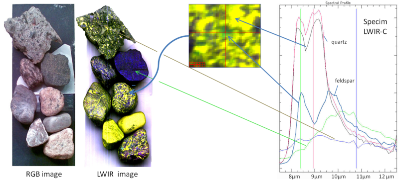

Week 2: Image Processing 1
- Images as Arrays
- Mean and Variance
- Profiles
- Edges
- Computer Vision Opportunities in Egypt
- Resources
- Interesting Application: Artistic Flavor
- Week 2: Demo and Lab Source Files
Images as Arrays

RGB Images
For RGB images, each pixel is composed of three channels, namely: red, green, and blue.

Binary Images and Scaler Images
- A pixel in a binary image is either 0 or 1.
- A pixel in a scaler image is composed of a single channel with scaler value.
- Example: 256-grayscale images.
Converting from RGB to Grayscale
For each RGB pixel, we compute a combination of the three values into single value. In literature, using a combination of is extensively used.
def rgb2gray(rgb_image):
return np.dot(rgb_image[...,:3], [0.299, 0.587, 0.114])

Converting from Grayscale to Binary Image
We can binarize an image by using a threshold value, such that pixel value is 1 if and 0 otherwise.
def binarize( gray_image , threshold ):
threshold = np.max( gray_image ) * threshold
return 1 * ( gray_image > threshold )
Hyperspectral Images
Pixels in Hyperspectral images consists of many channels.


Mean and Variance
print( np.mean( image ))
print( np.std( image ))
Profiles
x0 = 0
x1 = gray_image.shape[0] - 1
y0 = 0
y1 = gray_image.shape[1] - 1
x, y = np.linspace(x0, x1, 300), np.linspace(y0, y1, 300)
profile = gray_image[x.astype(np.int), y.astype(np.int)]
#-- Plot...
fig, axes = plt.subplots(nrows=2)
axes[0].imshow(gray_image)
axes[0].plot([x0, x1], [y0, y1], 'ro-')
axes[0].axis('image')
axes[1].plot(profile)
plt.show()

Edges
In images, we are always interested to define the boundaries of objects existing in an image, and separating it from background. Edge detection is fundamental step in many Computer Vision pipelines. The simplest form of edge detection is applying mathematical differentiation on image data. Since we work with digital pixels, we will apply difference equations.
First-Order Derivatives
where:
is the derivative with respect to x (gradient in the x direction)
is the derivative with respect to y (gradient in the y direction).

Computer Vision Opportunities in Egypt
Internship at Affectiva

Internship 1: Machine Learning
Internship 2: Empath Summer Internship
A very interesting talk by Rana Elkaliouby about Affectiva:
360imaging in Egypt
An intuitive and easy to use treatment planning software for accurate and predictable planning of implant cases.
- Planned Dental Surgeries.
- They demand highly skilled C++ developers.
- Computer Vision background is a plus
- They offer opportunities through Wuzzuf.
Egyptian AI & Big Data Geeks
Follow the latest news, technologies, and vacancies in Egypt
Also visit the pinned post for lots of info about many related topics.
Other International Internships
AI Residency Programs
Resources
- Awsome Computer Vision, +5K starts.
- Awesome Machine Learning, 30K starts.
- Stanford Machine Learning Group
Interesting Application: Artistic Flavor
Neural Doodle

Week 2: Demo and Lab Source Files
$ git clone https://github.com/sbme-tutorials/sbe401-week2-demo.git